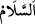

“–Şehir harap olacak, sahibi de ölecek.” demişler.
Bunun üzerine hükümdar:
“–Peki siz harap olmayan, sahibi de ölmeyen bir yurt biliyor musunuz?” demiş.
“–Biliyoruz.” demişler, cenneti ve nimetlerini anlatmışlar. Hükümdarı cennete karşı
şevklendirmişler, cehennemi ve azabını anlatıp cehennemden korkutmuşlar. Hükümdarı
Allah Teâlâ’ya kulluk etmeye davet etmişler.
Hükümdar da bunu kabul etmiş. Allah Teâlâ’ya tevbe ederek korku içinde
hükümdarlığı terk etmiş.
“Allah …çağırır” âyeti zindanda olanların âzâdlığı için gelmiştir
Zindanlıklara söyle ki gam çekmesinler
Pâdişahlar ahmakların hepsini zincire bağlayıp zindana atarlar
Sen ki Allahım onları zindandan gülistan tarafına çekersin
Bir hadiste şöyle buyrulmuştur: “Güneşin doğduğu hiçbir gün yoktur ki bu günün
önünde ve sonunda iki melek insanlarla cinlerden başka tüm varlıkların duyacağı
şekilde şöyle sesleniyor olmasın: “Ey insanlar, haydi gelin Rabb’inize! Allah esenlik
yurduna çağırıyor.”[48] Yani cennete girmeye sebep olacak amellere çağırıyor.
Bu sebepledir ki meşâyıhtan birisi şöyle demiştir: “Allah Teâlâ zâhirde sana taatte
bulunmanı vâcib kılmıştır. Hakîkat bakımından ise sana cennetine girmekten başkasını
vâcib kılmamıştır. Çünkü iş dönüp dolaşıp oraya varır. Cennete girmeyi sağlayan
sebepler ise yok olup gider. İnsanlar Allah’ın bu davetine ve vacib kılışına muhtaçtırlar.
Çünkü insanların çoğunda bir âmil olmadan kendilerini oraya sevk edecek mürüvvet
yoktur. Mürüvvet, muhabbet ve vefa ehli ise bunun aksinedir. Onlar herhangi bir
zorunluluk olmasaydı bile Hakk’a hakkıyla kulluklarını yaparlar, O’nun rubûbiyyeti ile
ilgili gözetilmesi gereken hürmeti gözetirlerdi.”
“Dâru’s-selâm”ın “Allah Teâlâ’nın yurdu” anlamında olması da câizdir. Çünkü es-
Selâm, yüce Allah’ın isimlerindendir. “dâru’s-selâm” daki izafet ise, tıpkı
Beytullah’taki gibi şereflendirmek içindir.
Allah Teâlâ hakkında kullanıldığında “
” lafzının mânâsı, Allah’ın zâtının her
türlü kusurdan, sıfatlarının her türlü noksanlıktan, fiillerinin de şer olmaktan uzak
olmasıdır.
Kullar hakkında kullanıldığında “selâm”ın mânâsı, kalbinin hileden, kin ve hasedden,
organlarının günahlardan ve mahzurlu hareketlerden sâlim olmasıdır. Selâm ve İslâm ile
ancak dilinden ve elinden müslümanların selâmette olduğu kimseler vasıflanabilir.
“Dâru’s-selâm”ın mânâsı şöyle de olabilir: “Allah, öyle bir yurda çağırır ki oraya
girene Allah Teâlâ da melekler de selam verirler, yahut oradakiler birbirlerini
selamlarlar.
Fakir (Bursevî) der ki: “Dâru’s-selâm”, Allah Teâlâ’dan başkasına bağlanmaktan